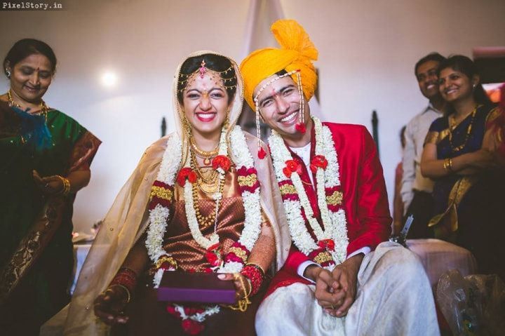
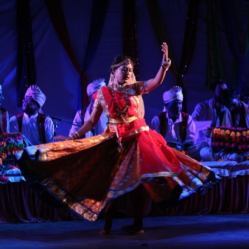
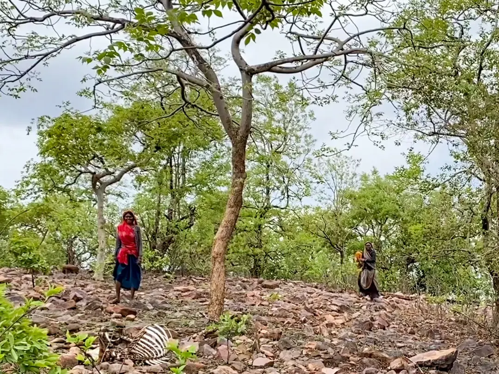
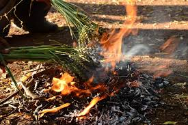
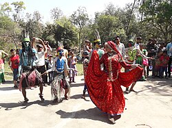
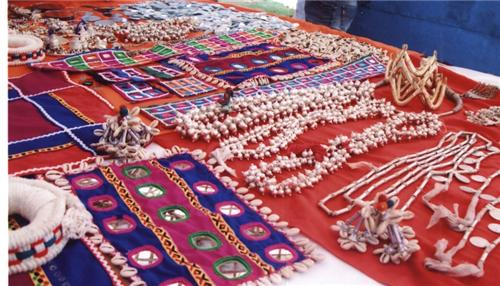
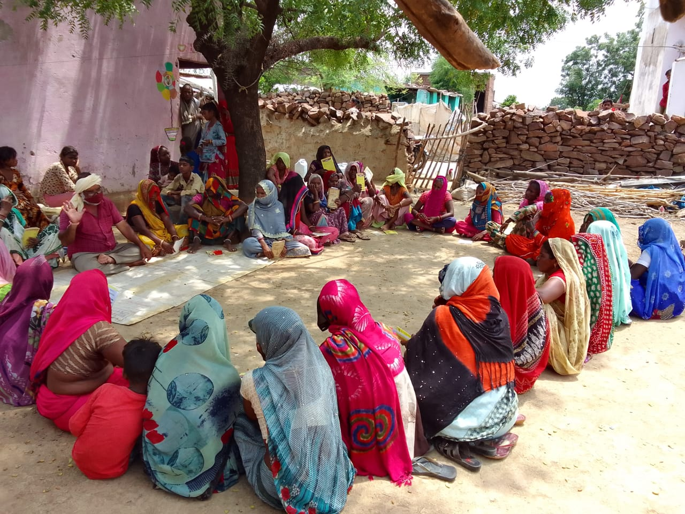

Archive
Browse the Collection
Each entry is accompanied by contextual information including location, cultural significance, and participant narratives. The archive contains photographs, video recordings, audio recordings, transcriptions, and field notes.

Mandana Ritual Floor Paintings
Floor paintings applied during the Diwali festival in Shahabad. Documents the process from clay wash to final design, with participant commentary on symbolic meaning.

Wedding Mandana Series
Documentation of Mandana created for a wedding in Kishanganj. Includes pre-ceremony wall painting and floor pattern, with interviews with the artist and family.

Swang Performance — Forest Narrative
Evening Swang performance depicting the story of a forest spirit and a village community. Recorded with community permission; includes full video and transcription.

Elder Testimony: Forest Knowledge
Extended interview with a community elder describing the relationship between Sahariya ecological knowledge and seasonal art practices. Hindi with English transcription.

Harvest Festival Documentation
Multi-day documentation of the Kharif harvest festival including ritual preparations, performance, and community feast. Mandana painted for the occasion is included.

Women's Song Traditions
Recordings of songs performed by women in a domestic setting during a naming ceremony. Includes commentary on the purpose and meaning of each song by the performers.

Seasonal Pattern Survey
A survey of Mandana patterns created across different seasons and occasions in three villages, documenting variation and consistency in the visual vocabulary used.

Wedding Ritual Songs
Audio documentation of songs performed during a three-day wedding celebration, organised by day and ritual phase, with contextual notes from field researchers.

Birth Ceremony Documentation
Documentation of a naming and birth ceremony including the specific Mandana painted for the occasion and songs performed to welcome the newborn.
About the Archive
The archive is not merely a repository but a collaborative space where the Sahariya community participates in documenting and interpreting their own cultural heritage. All entries are created with informed community consent. Some materials are restricted to protect privacy or sacred content — contact the research team for academic access requests.